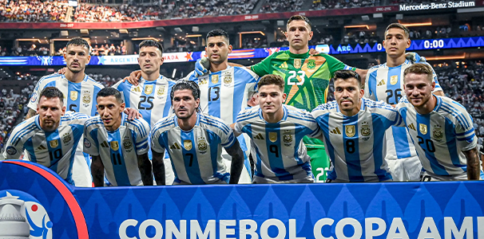
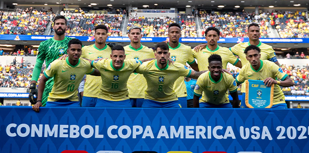
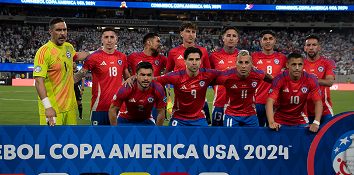

Lionel Messi’s band are back together for a shot at a third consecutive major title, where they have skipped towards the final at a relatively relaxed pace. That doesn’t matter too much though, as they have proved that they are a team of winners in the last few years.
Brazil finalized their squad for the 2024 Copa America in early June after coach Dorival Junior made some initial decisions that raised a few eyebrows among Selecao fans.
Chile is a long, narrow country stretching along South America's western edge, with more than 6,000km of Pacific Ocean coastline. Santiago, its capital, sits in a valley surrounded by the Andes and Chilean Coast Range mountains. The city's palm-lined Plaza de Armas contains the neoclassical cathedral and the National History Museum. The massive Parque Metropolitano offers swimming pools, a botanical garden and zoo.